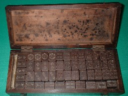
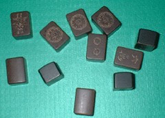
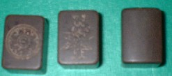

col30、col32に続いて、戦後・木製牌の紹介。
col30は、商業ベースで作られた木製牌であるが、col32は個人の愛雀家による手作り牌。今回紹介する牌も、個人の愛雀家による手作り牌。
函は、この牌専用に作られたものではない。牌を制作した後で、それなりの適当な函を見つけて収納したもの。そこでしっかりはしているが、牌の材質とは異なる木である。

手作り牌もだんだんで、まったくのシロウトが麻雀をプレーしたい一心で手作りした牌もあれば、指物師や木彫関係の職人が、その腕を活かして制作した牌もある。今回紹介する牌は、その後者。
手作りとなると彫り込むのも大変。そこで一般に朴(ほお)の木など比較的彫刻しやすい材質の木が選ばれる。しかしこの木製牌は、少々の勢いで叩きつけてもビクともしないほど固い。

職人の手になるだけあって、彫りは安定していて図柄のバラツキはない。しかし材質が固いので、深く彫れない。そこで彫りが浅い線刻状態となっている。

材質はたぶん鉄刀木(たがやさん)か黒檀(こくたん)と思われるが、残念ながらσ(-_-)は木材に関してはシロウトで、ちと判然としない(-_-；
|